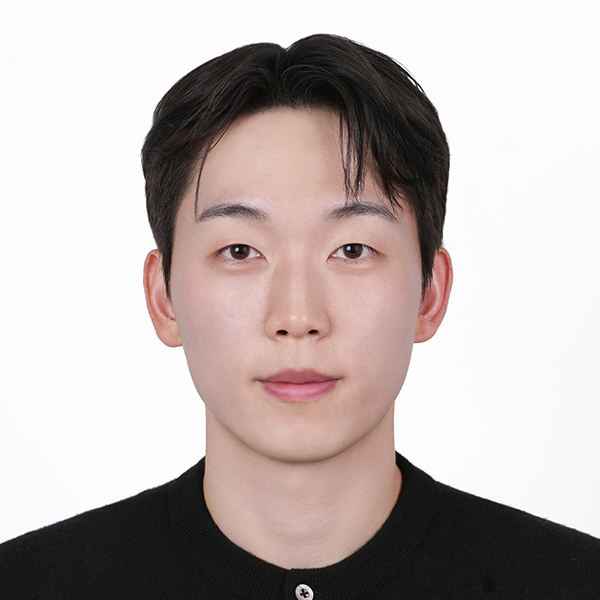

|
Kyuhyeok Seo
Hello! I am a Ph.D. student in the College of Information Sciences and Technology (IST) at Penn State University (PSU), advised by Professor James Z. Wang.
My research interests lie in AI for Science, with a focus on deep learning, cross-modal representation learning, and computer vision.
I am particularly interested in developing principled learning frameworks that integrate heterogeneous data modalities to advance scientific discovery.
Prior to joining Penn State, I earned my B.S. degrees in Industrial Engineering and Computer Science (double major) from Seoul National University (SNU).
My academic background combines rigorous training in optimization, statistical learning, and systems-level thinking with strong foundations in machine learning and artificial intelligence, which continues to shape my current research direction.
Email /
CV /
Github /
LinkedIn /
Scholar
|

|
Education
Ph.D. Student in Information Sciences and Technology
Penn State University, University Park, PA, USA Aug. 2025 – Present
Advisor: Prof. James Z. Wang
B.S. in Industrial Engineering & Computer Science and Engineering (Double Major, Cum Laude)
Seoul National University (SNU), Seoul, South Korea Mar. 2018 – Aug. 2024
Diploma for Gifted Students in Math and Science
Gyeonggi Science High School for the Gifted (GSHS), Suwon, South Korea Mar. 2015 – Feb. 2018
|
Research Experience
Research Assistant
College of Information Sciences and Technology (IST), PSU, PA, USA
Aug. 2025 – Present
Advisor: Prof. James Z. Wang
• Assistant to Professor James Z. Wang in developing multi-modal deep learning models for cross-modal learning
Undergraduate Researcher
Data Mining Lab (DM), KAIST, Seoul, South Korea
Jan. 2023 – Dec. 2023
Advisor: Prof. Kijung Shin
• Developed a deep learning framework for Open-World Graph Learning (OWG) by leveraging Graph Contrastive Learning (GCL) techniques
• Improved embedding grouping using extended GCL pairing and novel cluster parameters
Undergraduate Researcher
Data Science & AI Lab (DSAIL), KAIST, Daejeon, South Korea
Jun. 2022 – Aug. 2022
Advisor: Prof. Chanyoung Park
• Implemented foundational GNNs and recommender systems
• Developed regularization strategies to mitigate catastrophic forgetting in multi-task learning
|
Industry Experience
Ads Performance, Data Science & Analytics (DSA) Intern
Moloco, Seoul, South Korea
Jun. 2024 – Sep. 2024
• Redefined and validated ad error criteria by analyzing their impact on performance decline
• Developed Looker Studio dashboards to visualize advertising KPIs across various dimensions
• Automated regular dashboard updates using Google BigQuery and Airflow
|
|
{kind=link}